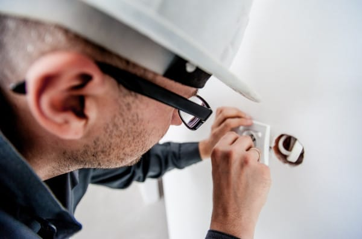
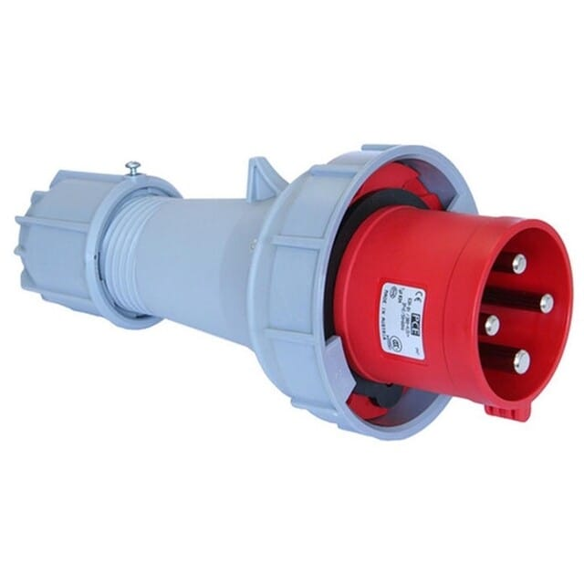
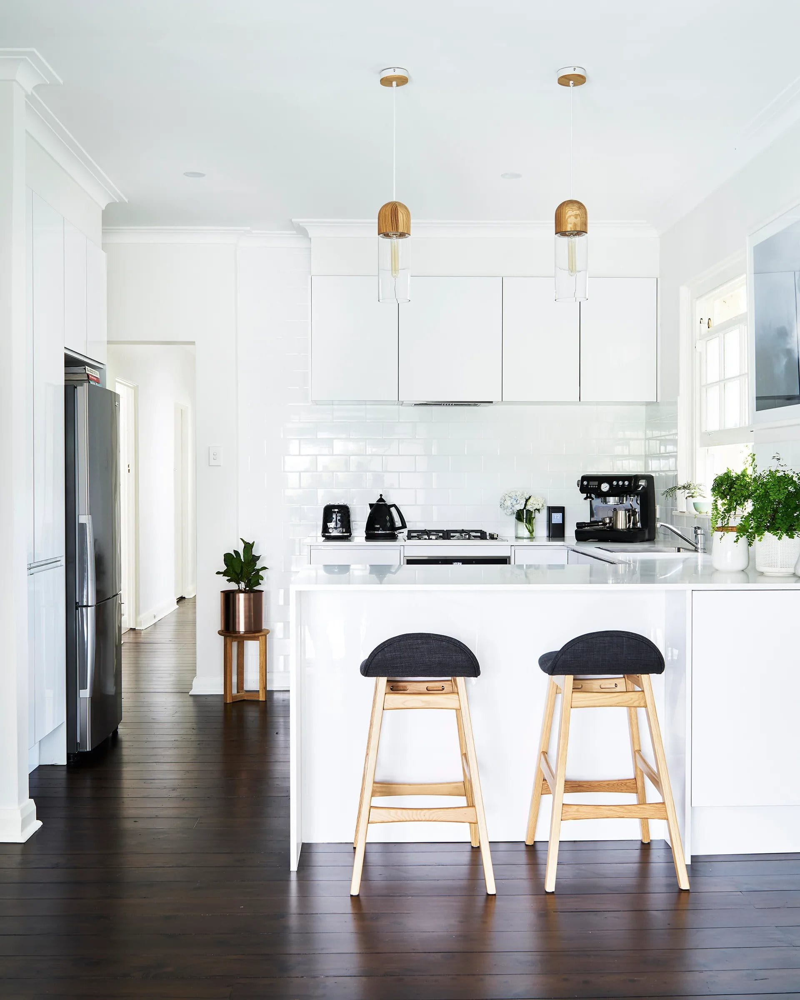
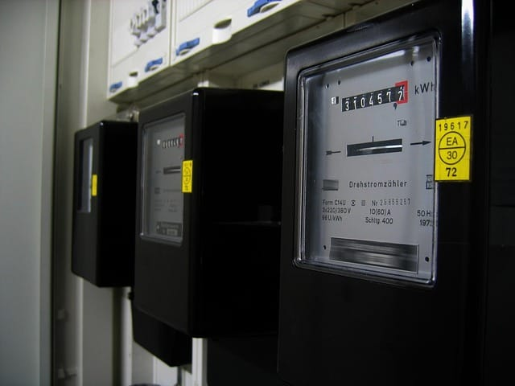

Elektricien Veghel 24 uur ⚡
Maakt u in uw woning of bedrijf gebruik van zware elektrische apparaten? Dan kunnen wij bij Elektricien Veghel 24 uur krachtstroom vakkundig voor u aanleggen en aansluiten!

Voordat we uitleggen hoe krachtstroom aanleggen werkt, is het goed om te weten wat krachtstroom precies is. Krachtstroom – ook wel drie-fasenstroom genoemd – is een elektriciteitsvoorziening met drie actieve geleiders in plaats van de gebruikelijke twee. Hierdoor kan meer vermogen worden geleverd dan bij een standaard aansluiting.
Met een krachtstroomaansluiting kunt u meerdere zware elektrische apparaten gelijktijdig gebruiken, zonder risico op overbelasting of storingen. Ideaal voor onder andere kookplaten, laadpalen en machines. Wilt u krachtstroom laten aanleggen? De specialisten van Elektricien Veghel 24 uur helpen u daar graag bij!


Het aanleggen van krachtstroom is noodzakelijk wanneer u gebruik wilt maken van zware elektrische apparaten zoals een inductiekookplaat, elektrische oven, jacuzzi of sauna. Dergelijke apparaten verbruiken meer stroom dan een standaard enkelfasige aansluiting kan leveren. Daarom is een driefasige krachtstroomaansluiting nodig om deze veilig en efficiënt te laten functioneren.
Door krachtstroom aan te leggen zorgt u ervoor dat uw woning over voldoende vermogen beschikt om meerdere zware apparaten tegelijk te gebruiken, zonder storingen of overbelasting. Controleer eerst of uw woning al is voorzien van een 3-fase aansluiting. Is dat niet het geval, dan moet de hoofschakelaar worden vervangen door een 3-fase exemplaar.
Het aanleggen van krachtstroom kan bovendien een goede oplossing zijn wanneer uw stoppen regelmatig doorslaan. Dit gebeurt vaak omdat de apparaten te veel energie verbruiken voor een standaard enkelfasige aansluiting. Met een 3-fase systeem wordt het stroomverbruik beter verdeeld, waardoor uw installatie stabieler en veiliger werkt.


Wanneer u zware huishoudelijke apparaten wilt installeren, is het belangrijk om krachtstroom te laten aanleggen. Met krachtstroom beschikt u over een stabiele en betrouwbare stroomvoorziening, ook wanneer meerdere apparaten tegelijk worden gebruikt.
Of u nu een enthousiaste kok bent met een inductiekookplaat, wilt ontspannen in uw thuis-sauna, of uitgebreide tuinverlichting heeft – krachtstroom zorgt ervoor dat alles probleemloos blijft werken. Met een juiste aansluiting bent u verzekerd van voldoende vermogen en optimale veiligheid.
Grote elektrische apparaten verbruiken meer energie dan een standaard 230 volt stopcontact kan leveren. Daarom zijn er speciale krachtstroomstopcontacten nodig. Deze worden aangesloten op een 3-fase stroomvoorziening, ook wel krachtstroom genoemd.
In tegenstelling tot een normaal stopcontact, dat bestaat uit twee draden (een spanningsdraad en een nuldraad), beschikt een krachtstroomaansluiting over drie spanningsdraden en één nuldraad. Hierdoor kan een spanning van 400 volt worden geleverd, wat ideaal is voor zware apparatuur. Houd er rekening mee dat krachtstroom alleen kan worden aangelegd bij een 3-fase aansluiting.
U vraagt zich misschien af wat de kosten voor het aanleggen van krachtstroom zijn. Het exacte bedrag is afhankelijk van verschillende factoren, zoals de grootte van uw woning, de staat van uw huidige elektrische installatie en de afstand tot het dichtstbijzijnde aansluitpunt.
U vraagt zich misschien af wat de kosten voor het aanleggen van krachtstroom zijn. Het exacte bedrag is afhankelijk van verschillende factoren, zoals de grootte van uw woning, de staat van uw huidige elektrische installatie en de afstand tot het dichtstbijzijnde aansluitpunt.
Het laten aansluiten van krachtstroom is een waardevolle investering: het zorgt ervoor dat u zware elektrische apparaten veilig en efficiënt kunt gebruiken. Schakel daarom altijd een ervaren elektricien in voor deze specialistische klus.

Wilt u krachtstroom laten aanleggen? Dan zijn er enkele aanpassingen in uw meterkast nodig. Het is belangrijk dat deze werkzaamheden worden uitgevoerd door een erkende en ervaren elektricien, zodat alles veilig en volgens de voorschriften wordt geïnstalleerd. Hieronder vindt u een aantal mogelijke aanpassingen die onze specialisten kunnen uitvoeren:
Neem contact op met onze elektricien.